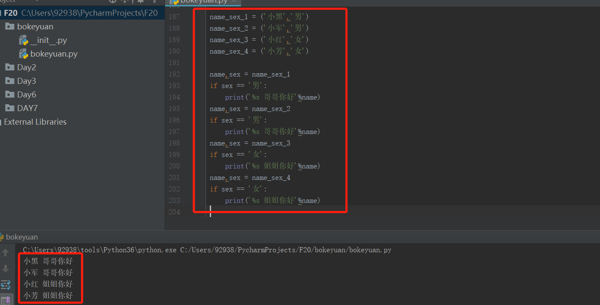

午休后，看看电视，在回顾下新的知识----函数。相信很多小伙伴在学习python后 ，学到函数就会有一部分人放弃了，从努力到放弃（内容过于真实）
好希望我也能有很多粉丝,hhh....
函数：
什么是函数？作用是什么呢?
函数就是让我们来偷懒的，没错，就是这样简单粗暴的解释。。。
作用呢？就是我们定义的函数，把需要反复调用的代码放在里面，就可以反复使用。
专业点的说明就是：函数将一段代码进行封装，被封装的代码，如果不调用，就不会被执行。
我们看个小案例：
比如看到男生就叫哥哥你好，看到女生就叫姐姐你好。比如有4个人，两个男生，两个女生。
1 name_sex_1 = ('小黑','男')
2 name_sex_2 = ('小军','男')
3 name_sex_3 = ('小红','女')
4 name_sex_4 = ('小芳','女')
5
6 name,sex = name_sex_1
7 if sex == '男':
8 print('%s 哥哥你好'%name)
9 name,sex = name_sex_2
10 if sex == '男':
11 print('%s 哥哥你好'%name)
12 name,sex = name_sex_3
13 if sex == '女':
14 print('%s 姐姐你好'%name)
15 name,sex = name_sex_4
16 if sex == '女':
17 print('%s 姐姐你好'%name)

用函数来改下上面的案例：我们会发现上面？
1 name_sex_1 = ('小黑','男')
2 name_sex_2 = ('小军','男')
3 name_sex_3 = ('小红','女')
4 name_sex_4 = ('小芳','女')
5
6 def name_sex(name,sex): #定义函数开的头用def关键字，后面紧跟自定义的函数名称，还有括号，以及：冒号结尾
7 if sex == '男':
8 print('%s 哥哥你好' % name)
9 elif sex == '女':
10 print('%s 姐姐你好' % name)
11
12 name,sex = name_sex_1
13 name_sex(name,sex) #调用我们定义的name_sex函数
14
15 name,sex = name_sex_2
16 name_sex(name,sex) #继续调用我们的函数
17
18 name,sex = name_sex_3
19 name_sex(name,sex) #依然调用我们定义的函数，这样代码可读性很强，很有规律
20
21 name,sex = name_sex_4
22 name_sex(name,sex) #还是调用我们的函数，如果需要调用多次，就会很省事。
接下来，我们看下函数的定义，再来认识下函数：
刚才的案例中，我们看到函数的定义需要用def关键字申明，这是一个函数，后面紧跟要定义的函数的名字，案例中的name_sex就是定义的函数名。
然后注意，括号后面一定要用：冒号结尾。括号里面可以放函数的参数,如果参数有多个就用【，】号来分开，比如案例中有两个参数在括号中。
1 def name_sex(name,sex): 我们再看下，函数定义完成后，他下面的函数体，需要和我们之前说的缩进一样：
1 def name_sex(name,sex): #定义函数开的头用def关键字，后面紧跟自定义的函数名称
2 if sex == '男': #以下都是函数体
3 print('%s 哥哥你好' % name)
4 elif sex == '女':
5 print('%s 姐姐你好' % name)那么函数是怎么调用的呢?
调用函数是这样的：我们看到name_sex(name，sex) 这就是在调用我们定义的name_sex函数
1 name,sex = name_sex_2
2 name_sex(name,sex) #调用定义的name_sex函数 ,同时传入两个参数name和sex
总结：
1、怎么定义一个函数大家一定看懂了吧
2、函数的基本调用方法相信也明白了吧
3、函数的作用相信也有了大概的了解
明天开始细化函数的参数以及函数的返回~~晚安，如果对你有帮助，请关注我，如果你有不懂的请评论，看到会回复的，谢谢各位~